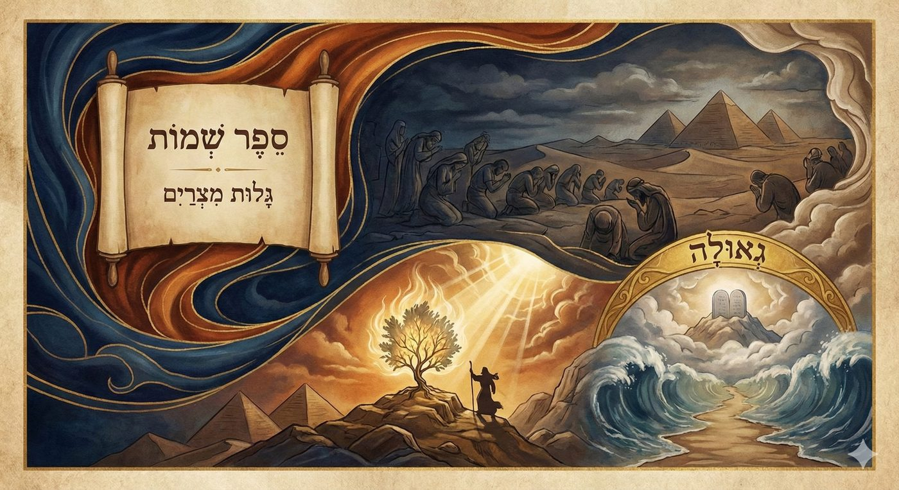
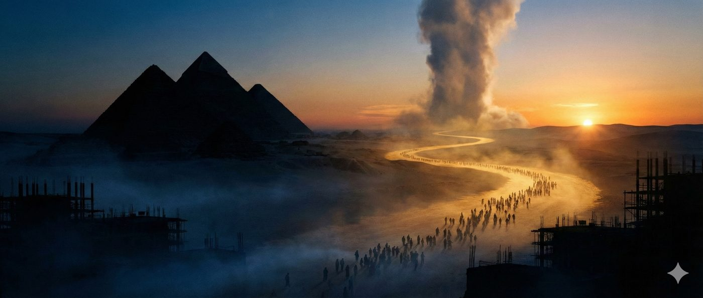
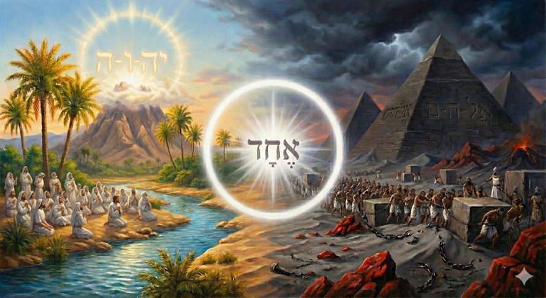
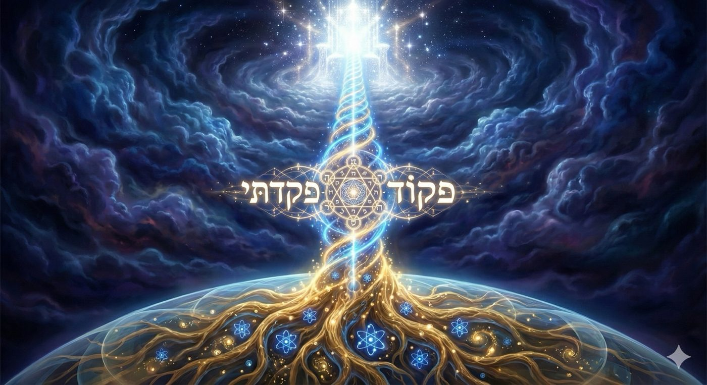
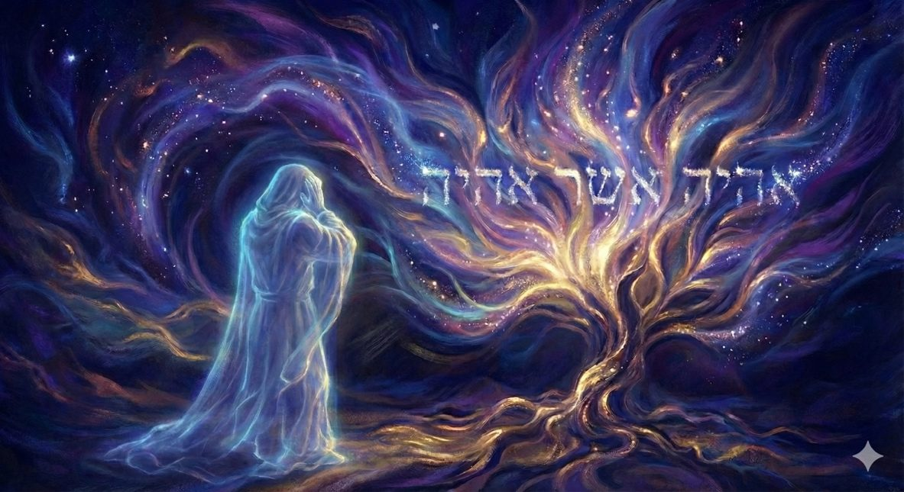
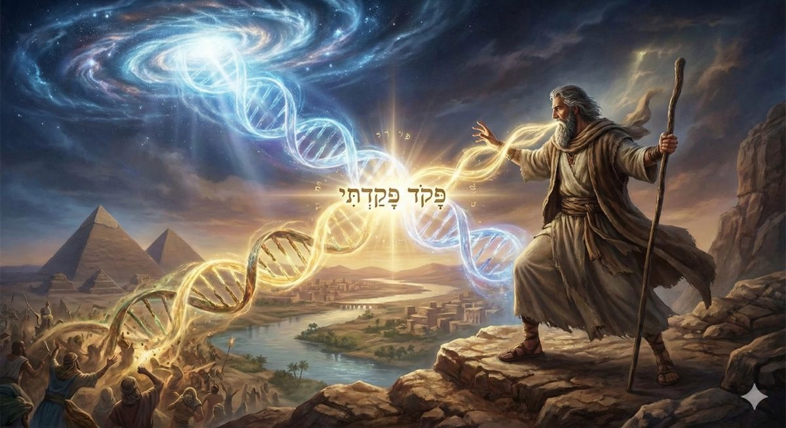
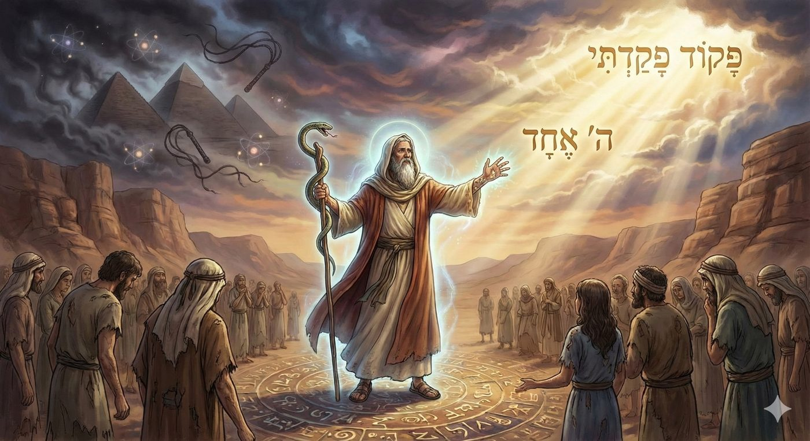
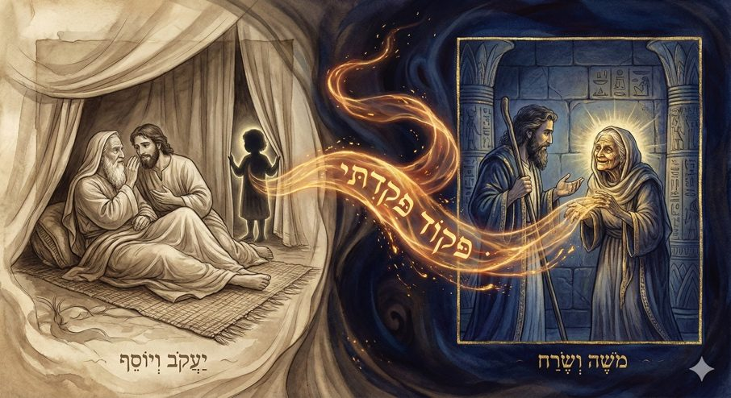
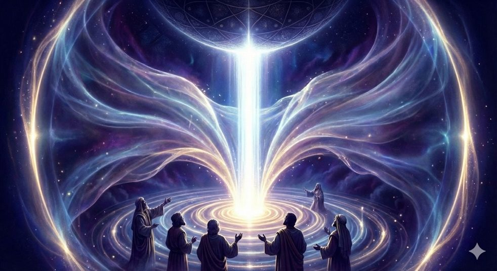
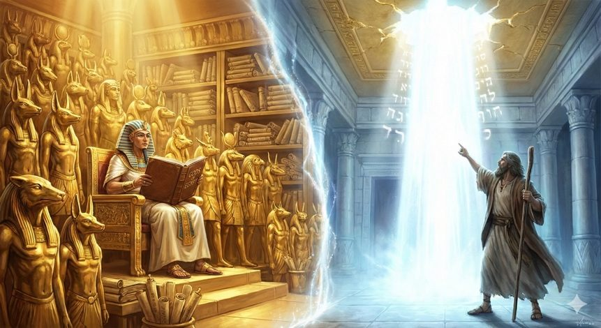

Chemot 5786
Nommer la délivrance

Le livre de l’Exode s’ouvre sur la sombre fresque de l’Exil en Égypte, la Galut Mitzrayim, et relate l’émergence de Moché, notre Maître, en tant que berger fidèle du peuple d’Israël. Ce récit initiatique nous conduit de la révélation mystique au cœur du buisson ardent jusqu’à l’investiture prophétique, décrivant la présentation de cette mission divine tant aux enfants d’Israël qu’à Pharaon. C’est ici que s’amorce le processus de la Délivrance, la Geoula, lequel se déploiera au fil des sections hebdomadaires pour culminer au mont Sinaï avec le don de la Torah.
L’échec de la perception des Noms de D.
Le titre même de cette paracha, identique à celui du Sefer qu’elle inaugure, Chemot (les Noms), nous convie à explorer un paradoxe qui traverse à la fois le texte biblique et la liturgie juive : la multiplicité des dénominations utilisées par le premier monothéisme de l’histoire pour qualifier le Divin.
Ce paradoxe théologique prend une résonance particulière dans le contexte de l’Exil de l’Egypte, lieu emblématique de la déification des forces de la nature, où le peuple d’Israël est marqué au fer rouge pendant près de 210 ans et elle affleure de manière saisissante à deux reprises, dans notre paracha.
Elle apparaît d’abord lorsque Moché, tout juste investi de sa mission de libération des enfants d’Israël, interroge D. au cœur du buisson ardent :
« Voici, je vais trouver les enfants d’Israël et je leur dirai : Le D. de vos pères m’envoie vers vous... S’ils me disent : Quel est son nom ? Que leur dirai-je ? »
Et elle resurgit avec force lorsque Moché présente sa requête à Pharaon :
« Pharaon répondit : "Quel est cet Éternel dont je dois écouter la parole en laissant partir Israël ? Je ne connais point l’Éternel et certes je ne renverrai point Israël." »
De ces échanges cruciaux, nous déduisons que la libération des Bnei Israël est intrinsèquement liée à la juste perception du Divin, tant par les Hébreux que par Pharaon.
Moché, dans son rôle à la fois de guide spirituel et de libérateur, devait corriger la vision du divin pour permettre aux hébreux d’accéder à la Geoula et de dévenir un peuple libre susceptible de recevoir la Torah.
Pour affronter Pharaon, le maître des lois de la nature, et réconforter les Bnei Israël, accablés par la souffrance, il ne pouvait présenter un D.ieu uniquement transcendant (trop distant pour des esclaves) ou un D.ieu strictement immanent (qui paraîtrait impuissant face à l'autorité de Pharaon). Il lui fallait montrer que la compréhension véritable du Divin se trouve dans le douloureux équilibre entre la transcendance et l’immanence divine.
La présente étude, fondée sur une analyse des sources mystiques et Hassidiques le Zohar, le Midrash, le Mei HaShiloach, le Sfat Emet ainsi que les traditions orales, se propose de présenter les mécansimes spirituels de la sortie d’Egypte.
Nous suivrons un enchaînement rigoureux : partant de la crise ontologique de l'Exil, traversant la pédagogie de la Révélation au Buisson Ardent, pour aboutir à l'activation du Code de la Rédemption de la Geoula pakod pakadti “du souvenir je me suis souvenu” et à la confrontation finale des paradigmes.
L'objectif de cette étude est de démontrer que la clé de la délivrance ne réside pas uniquement dans l'action politique ou militaire, mais dans l'unification d'un "double système de commande" : la capacité de percevoir le Divin simultanément comme le Maître de l'Histoire la Transcendance l’Eternel et comme la Force vitale cachée au sein de la nature et de la souffrance Immanence/Elohim.

Ses Noms
Avant d’entrer dans la Révélation, il faut poser le décor : les « Noms » sont des modalités d’actions, et leur multiplicité définit la tension entre les deux systèmes de commandes : l’immanence et la transcendance.
Les vêtements du Créateur
Il convient d’établir d’emblée une vérité axiomatique :
Il est dans la définition du Créateur d’être, et ainsi d’être Un, unique, invariant, indivisible, indissociable, etc… mais pour autant, parce que tel est sa Volonté, D. se pare de vêtements circonstanciels pour interagir avec le monde, se révélant sous diverses facettes, divers attributs et différents noms, mais cela n’altère en rien Son absolue unicité.
Nous disposons ainsi d’une constellation de noms divins, chacun dévoilant un mode spécifique de la manifestation céleste. Parmi les plus éminents, le Tétragramme ineffable (Yod / Hé / Vav / Hé) symbolise la pure miséricorde et l’intemporalité de l’Éternel, le nom E.l.o.h.i.m. incarne la rigueur divine s’exprimant à travers les lois immuables de la nature, le nom A.d.o.n.a.ï. désigne le Maître exerçant Sa souveraineté sur les créatures…
Les noms de D. désignent des modes de relations entre le Créateur et Sa création, ainsi pour approfondir les plus importants de notre liturgie et du texte de la Torah :
Elohim représente, l’attribut du jugement : Ce nom est un pluriel (ou pluriel de majesté). Il est associé dans la Genèse à la Création de la nature (Bereshit bara Elohim). La Gematria (valeur numérique) d'Elohim (86) est égale à celle de Ha-Teva (La Nature). Elohim représente le Divin caché dans les lois naturelles, la force immanente, la rigueur (Din). Pharaon ne conteste nullement Elohim. Ses magiciens savent manipuler les forces d'Elohim. Ils savent modifier leurs bâtons pour les transformer en serpents, changer l’eau du Nil en sang, …
Youd /Hé /Vav /Hé (L'Éternel), représente le nom propre de D., l’ineffable. Il est construit sur la racine du verbe être (Haya היה), fusionnant le passé, le présent et le futur. Il signifie "L'Être qui fait être", "Celui qui était", "Celui qui sera", le Maître de l'Histoire et de la Miséricorde (Rahamim). Le tétragramme (les 4 lettres fondamentales) représente D. qui intervient, qui brise les cycles, qui transcende la nature pour instaurer une relation personnelle.
Nous sommes soumis à l’exigence d’intégrer l’unité de ces noms, matin et soir, nous devons reciter le Chema Israël qui est une proclamation de l’Unité Divine : Écoute Israël, L’Eternel (le tétragramme) est ton D. (Elokim), L’Éternel est EHAD (unique) |
 |
|---|
Les modalités de commandes du Créateur
L'immanence, du latin in-manere (demeurer en), évoque ce qui est contenu dans la nature même d'un être. C'est une réalité qui se suffit à elle-même, puisant sa force dans ses propres entrailles, telle la sève qui parcourt l'arbre et qui est inhérente à son déploiement vital. Dans cette vision, le divin n'est pas un créateur lointain, mais l'étincelle de vie qui vibre dans chaque atome, le « D.-Nature ».
À l'opposé, la transcendance, du latin trans-scendere, (au-delà de, monter) désigne l'irruption d'une verticalité vertigineuse. C'est le sommet de la montagne caché par la brume, l'Autre absolu qui précède l'univers et demeure insaisissable.
Si la philosophie oppose ces visions, la tradition biblique maintient une tension féconde entre elles : le D. de la Torah est simultanément le Roi de l'Univers trônant dans une transcendance absolue, et le D. intime murmurant à l'oreille des prophètes.

L’Égypte l’école de l’apprentissage du divin
Il faut comprendre que la servitude en Égypte ne se limitait pas à un asservissement des corps, mais constituait avant tout un effondrement de la perception du Divin consubstantielle d’un asservissement des esprits. Étymologiquement, le terme hébreu pour l'Égypte, Mitzrayim, dérive de la racine Meitzar (מיצר), signifiant "étroitesse", "détresse" ou "limites". Dans la cartographie spirituelle de la mystique et du Hassidisme, l'Égypte représente un état de conscience rétréci, une "constriction" où la fluidité de la relation entre le Créateur et la création est bloquée c’est pour cela que le Mei HaShiloach et le Sfat Emet s’appuyant sur le Zohar insistent sur le fait que l'exil est avant tout un exil du "Da'at" (de la Connaissance/Conscience).
La conscience égyptienne, en effet, fragmentait l’absolu en une multitude de forces naturelles localisées (divinités du Nil, du soleil, de la fertilité), niant par là même toute Transcendance, et rendant impossible la sortie de ce statut d’esclave, puisque la loi égyptienne immanente interdisait aux esclaves de sortir du territoire. A l’inverse, une conception purement abstraite d’un D. lointain risquait de rendre la souffrance humaine insignifiante aux yeux de l’Éternel. Il fallait démontrer l’union des contraires pour accèder à la délivrance.
Le Nom de la Délivrance
Dans ce contexte d’étranglement des Noms et de la perception divine, surgit l’événement fondateur du parcours initiatique de Moché Rabenou : la révélation du buisson ardent.
La vision du Buisson : le point de départ
Face au buisson ardent, Moché analyse l'impossible union : « Le buisson brûlait au feu, et le buisson n'était pas consumé ». Le Feu (HaEsh) représente la Transcendance absolue, la Sainteté dévorante qui ne tolère aucune finitude, c'est l'aspect de D. qui modifie les lois naturelles. Le Buisson (HaSneh) représente l'Immanence, Israël dans son état le plus bas, épineux et vulnérable, l’aspect de D. qui régit le monde au travers des lois naturelles.
Normalement, l'Infini devrait annihiler le Fini, le feu devrait consommer le bois. Pourtant ici ce n’est pas ce qui s’opère, provoquant l'étonnement de Moché dont l’interrogation est évidemment métaphysique : « Moché dit : je veux m’approcher je veux examiner ce grand phénomène pourquoi le buisson ne se consume pas ? »
Comment l'Absolu peut-il résider dans le Relatif sans le détruire ?

D. sous le vocable « l’Eternel » lui apparait pour lui enseignes alors que la Rédemption consistera à descendre en Égypte avec toute Sa puissance (le Feu) pour sanctifier le peuple (le Buisson) sans le consumer.
Une rédemption purement transcendante aurait écrasé l'Égypte sans transformer Israël, Une rédemption purement immanente n'aurait été qu'une révolte d'esclaves,
Il fallait opérer avec les deux dynamiques pour que la Geoula réussisse.
Moché intérroge alors D. ne comprenant pas encore totalement le fonctionnement de ce double système de commandes : « Voici, je vais trouver les enfants d’Israël et je leur dirai : Le D. de vos pères m’envoie vers vous... S’ils me disent : Quel est son nom ? Que leur dirai-je ? »
Le Nom du Devenir
D. répond immédiatement avec un Nom : Ehyeh Asher Ehyeh « Je serai qui Je serai »
Ehyeh est le nom de D. qui réprésente le Devenir. Rachi et le Midrash l'interprètent comme une promesse de présence continue dans la détresse actuelle et les futures.
Moché, terrifié par cette promesse d'une Immanence perpétuelle dans une souffrance transcendante, demande à ne révéler que la première partie « Je serai ». Il comprend que le peuple, dans sa fragilité, a besoin de l'Immanence immédiate (« Je serai là maintenant ») et ne peut supporter le poids d'une Transcendance future (je serai avec eux) révélant les épreuves futures.
L'intériorisation : La bouche lourde
Cette tension s'incarne dans la chair même du prophète, qui refuse la mission arguant d’une impossibilité physique son bégaiement qui l’empêcherait de porter la voix divine. Le Mei HaShiloach (Rabbi Mordechai Yosef Leiner d'Izbitza) explique que le défaut d'élocution de Moché était spirituel :
il percevait la Lumière Divine avec une telle intensité (la Transcendance) qu'il ne parvenait pas à la réduire (à la contracter Tsimtzum) dans les limites des mots humains (l’Immanence).
Il vivait dans le monde de la Pensée Pure. En obligeant Moché à parler : « Qui a fait la bouche de l'homme ? » (Lui ordonne D.), D. lui enseigne que la rédemption ne réside pas dans le silence extatique, mais dans l'acte difficile de l'articulation verbale au sein d'un monde brisé. Son bégaiement devenant alors l'espace même où la Shehinah pouvait se loger : puisque ses propres mots étaient absents, la Parole Divine pouvait traverser sa gorge sans l'obstruction de l'ego humain.
Moché se vide pour devenir le canal reliant le Ciel et la Terre, en intériorisant le message de D., il devient une bouche d’en bas qui laisse résonner la visite d’En-Haut.

Comment transmettre l’impossible union ?
En tant que Maître, il appartient désormais à Moché de présenter ce mécanisme au peuple d’Israël, mais comment présenter cette Vérité a un peuple opprimé, esclavagisé, depuis des siècles ? Comment démontrer que le D. qui rend possible l’esclavage, qui agit les atomes des fouets égyptiens est le même qui transcende la nature et va prochainement les libérer ?
La question prend d’autant plus de poids que, pour le peuple, Moché Rabbénou aurait pu apparaître simplement comme un prince égyptien n’ayant jamais connu la souffrance de l’esclavage, exilé près de quarante ans au pays de Madian, puis revenant soudainement avec un message de libération quasi-philosophique incompréhensible, voire inaudible, au nom du Dieu de leurs ancêtres. Moché lui-même formule cette objection « ils ne me croiront pas ».
D. le dote alors de signes magiques qui lui permet de démontrer de cette impossible union des contraires : le bâton qui se transforme en serpent, la main saine qui devient lépreuse, mais il lui dévoile surtout le message qu’il devra communiquer au enfants d’Israël pour attester de son statut messianique : Pakod Pakdati « du souvenir, je me suis souvenu »

Nommer le libérateur
La promesse de Yossef
C'est Yossef, le vice-roi d'Égypte, qui crypte le code sur son lit de mort : « D. vous visitera assurément (Pakod Yifkod)... » (Genèse 50:24). En formulant le code, Yossef anticipait le danger théologique majeur de l'exil égyptien : l'oubli de la Providence. Les Hébreux allaient être immergés dans une culture où le destin est régi par l’immanence des cycles naturels immuables (la crue du Nil en est le modèle ontologique). Yossef savait qu'ils auraient besoin d'un mot de passe qui réactiverait la mémoire de l'Alliance surnaturelle transcendante. Il a scellé ce mot de passe par un serment, en faisant une « tradition secrète » transmise uniquement aux chefs spirituels de chaque génération.
Serah1 bat Asher : La Gardienne
Les Anciens d'Israël possédaient la tradition du code, mais ils ne pouvaient pas authentifier le rédempteur par eux-mêmes. Ils avaient besoin de la « mémoire vivante ». Lorsque Moché est arrivé et a prononcé les mots, les Anciens sont allés consulter Serah, la fille d'Asher et petite-fille de Yaakov, dont l'exceptionnelle longévité (la tradition lui attribue une vie de près de 250 années2) garantissait la mémoire vivante de la nation.
Serah ne s'est pas laissée impressionner par les signes magiques (le bâton, la lèpre) de Moché, car les magiciens d'Égypte pouvaient faire de même. Mais lorsqu'elle a entendu la fréquence sonore du Pakod Pakadti, elle a confirmé sa stature messiannique.

Car l’exil n’enferme pas seulement les corps : il étrangle la parole. Pour sortir, il faut rouvrir un circuit, et c’est le sens du Galut HaDibbur et de sa Geoula.
L’exil de la parole
Pourquoi Moché devait-il prononcer ce code ? Pourquoi pas un ange ou une voix céleste ? Le Zohar explique que l'exil en Égypte était un « Exil de la Parole » (Galut HaDibbur). La capacité de communiquer avec le Divin était brisée. La parole sainte était emprisonnée dans la gorge de l'impureté. Moché, bien qu'ayant la « bouche lourde » (bègue ou inarticulé), devait être celui qui forcerait le passage. Ainsi fallait-il une voix humaine immanente pour canaliser le décret divin, transcendante. C'est pourquoi le code devait être transmis oralement, de souffle à souffle, pour préserver la qualité vibratoire de la Rédemption.
Le secret du code opératoire : Pakod Pakadti « souvenir, je me suis souviendrai »
Cette révélation se cristallise dans la structure grammaticale de Pakod Pakadti, qui renseigne sur cette opération de fusion des mondes.
L'infinitif absolu, Pakod, est une forme verbale dénuée de temporalité et de limite. Il incarne la Transcendance pure, l'action à l'état d'idée abstraite.
Dans la mystique juive, c'est la lumière de Sovev Kol Almin (la Lumière Infinie entourant la création).
C'est le D. des patriarches, le plan divin immuable et le « Souvenir » hors du temps, garantissant que la rédemption n'est pas une improvisation mais l'exécution d'une volonté primordiale.
Le verbe conjugué, Pakadti (« J'ai visité », « je me suis souvenu »), ancre l'action dans le temps, le sujet et l'objet, il incarne l'Immanence.
La lumière de Memala Kol Almin (la vitalité intérieure).
C'est D. entrant dans l'histoire, descendant dans la misère de l'esclavage pour une rencontre empathique et personnelle avec chaque âme, une « visite personnelle.
Lorsque Moché prononce cette formule, il nous enseigne que ces deux dynamiques ne sont qu’une, et ainsi que l’Infinie Volonté (Sovev) est reliée à l'Intervention Historique (Memala) et transmet aux Bnei Israël une clé de lecture fondamentale :
Celui qui a su contracter Sa lumière pour offrir un espace à l'existence humaine, évitant que la Création ne soit anéantie par l'intensité du Divin, est précisément Le même qui, aujourd'hui, déchire le voile de la nature pour sauver Son peuple.

Le Choc des noms
Reconnu par le peuple, Moché se heurte désormais au verrou majeur : Pharaon, maître d’un monde fermé à la transcendance historique.
Lorsque Moché et Aaron entrent pour la première fois dans le palais royal pour délivrer le message de libération, Pharaon répond par une question qui définit tout le drame de l'Exode :
"Pharaon répondit : Qui est l'Éternel, pour que j'obéisse à sa voix [...] ? Je ne connais point l'Éternel, je ne laisserai point aller Israël." (Exode 5:2).
Il est crucial de noter la précision du texte, Pharaon ne dit pas "Je ne crois pas en D.". L'Égypte est une terre saturée de d.ieux. Pharaon est lui-même « un d.ieu », fils de Râ, il connaît le concept de divinité. Ce qu'il ne connaît pas, c'est ce nom spécifique : Youd / Hé / Vav / Hé (le Tétragramme).
Le refus de Pharaon est donc un refus précis : il accepte l'immanence, le D. des forces, qu’a enseigné Yossef à l’Égypte, mais rejette la transcendance historique l’Éternel. Pour lui, le monde est régi par des lois immuables et des forces cosmiques dont il est le sommet. L'idée qu'une Volonté extérieure puisse intervenir pour libérer des esclaves, bouleversant l'ordre social et naturel est impensable.
Le Midrash du "Livre des D.ieux"
Le Midrash Shemot Rabbah (5:14) amplifie cette scène en décrivant la réaction "scientifique" de Pharaon face à la demande de Moché.
"À ce moment-là, Pharaon prit le livre des d.ieux [le registre des divinités] et commença à lire : le d.ieu d'Edom, le D. de Moab, le d.ieu de Sidon... Il leur dit : J'ai lu tous mes livres, et le nom de votre d.ieu n'y figure pas.".
La réponse de Moché, rapportée par le Midrash, est sans appel :
"Incensé ! Cherche-t-on les vivants parmi les morts ? Les d.ieux dont tu parles sont morts, mais notre D. est vivant.".

Ce texte est d'une profondeur saisissante, Pharaon agit en archiviste de l'immanence, et possède le catalogue du Fini. Pour lui, si un d.ieu existe, il doit être répertorié dans le système des nations, il doit avoir une fonction, une sphère d'influence géographique ou naturelle.
Il cherche une définition, une essence saisissable.
Les idoles des nations sont "mortes" parce qu'elles sont figées. Elles sont des objets de connaissance, des invariants naturels, Râ (le soleil) doit se lever chaque matin, mais il n'a pas de liberté. L’Éternel est "Vivant" parce qu'Il est libre. Il est inclassable, et ne peut être contenu dans les "archives" de la sagesse humaine.
L’Unité des noms malgré l’épreuve
Une fois la tension comprise, le chiour se retourne vers nous : non pas pour “expliquer” les décrets, mais pour apprendre à tenir l’unité dans l’épreuve.
La Réponse aux Vertiges de l’histoire
Loin de se cantonner à une spéculation métaphysique ou à un débat théologique d'un autre temps, cette "tension des Noms" résonne violemment dans notre chair. Elle cesse d'être un concept abstrait pour devenir une blessure encore vive, une déchirure intime qui se ravive chaque fois que nous confrontons la promesse éternelle de la Délivrance à la brutalité de notre mémoire collective.
Comment concevoir que le même D., Celui qui ressent la souffrance de Ses créatures, soit aussi Celui qui met en mouvement les forces infligeant cette douleur ?
Comment admettre que le D. libérateur est celui qui endurcit le cœur de pharaon et endurcit l’esclavage egyptien ?
Comment accepter que le D. qui permet la reconstruction d’Eretz Israël en 1948 soit le même qui vient de laisser les nazis anhilier 6 millions d’âmes dans les fours crématoires ?
Comment comprendre que le D. de la joie de Sim’hat Torah 2023 soit le même que Celui du 7 octobre 2023 ?
Comment proclamer que le D de la miséricorde, Youd,Hé,… Hachem est elokim, celui qui juge au travers des forces de la nature, comment prononcer l’unité divine en Exil dans la souffrance ? Ainsi que l’on doit l’affirmer matin et soir chaque jour lors de la récitation du Chema Israël en acceptant le joug divin et ses commandements ?
L'enseignement de notre paracha nous offre non pas une justification, car nous ne saurions expliquer les décrets du Ciel (que le Ciel nous en préserve), mais une posture existentielle :
La Torah nous apprend à ne jamais rompre le fil de notre relation à Hachem, même lorsque la nuit semble totale.
La Geoula ne consiste pas à changer D., mais à métamorphoser notre regard. Elle exige de percevoir que le Divin réside aussi intensément dans la « profondeur du manque » que dans le « faste de la joie ».
Le D. qui permet l'épreuve par Sa Volonté transcendante est rigoureusement le même que Celui qui pleure avec nous, dans l'épreuve, dans Son immanence. En réalité, la Délivrance advient lorsque nous cessons de fragmenter le Divin.
Le message que Moché transmet aux enfants d'Israël, et qui traverse les siècles jusqu'à nous, est une promesse bouleversante : même au plus bas de l'abîme, dans l'étroitesse absolue de Mitzrayim, nous restons « visités » (Pakadti).
C'est ici que se dévoile le secret ultime : la valeur numérique de Mitzrayima (vers l'Égypte / vers l’étroitesse) est strictement identique à celle de Shehinah (la Présence Divine)3.
D. n'est pas « absent », il est là, caché au cœur même de l’étroitesse.
C’est le sens profond du nom Ehyeh Asher Ehyeh : « Je serai avec vous dans cette peine, comme Je suis l'Éternel au-delà de toute peine. » et c'est dans cette fusion entre le « Je suis » de la souffrance et le « Je serai » de l'Espoir que se révèle le Sceau de D. dans ce monde : le Emet (La Vérité)4.
Parce qu’il n'y a pas deux divinités, mais une seule Volonté qui tantôt se masque pour créer le monde, tantôt se dévoile pour le libérer. Cette prise de conscience constitue le prélude indispensable à l'étape ultime : l'acceptation du D. Juge qui, bientôt, promulguera la Loi au Sinaï.
Croire en l’unité de ce double système de commandes, c'est déjà sortir d’Égypte.
« Sache-le donc en ce jour, et retiens-le dans ton cœur : c’est l’Éternel qui est D., en haut dans le ciel et en bas sur la terre ; il n’y en a point d’autre. » (Devarim 4:39)
Yehi Ratson, que soit la volonté du Ciel,
Que nous puissions maintenir notre croyance malgré les épreuves de la vie,
Que nous puissions vivre cette vérité et accéder à la Geoula
Chabat Chalom !
 Pour aller beaucoup plus loin…
Pour aller beaucoup plus loin…
Rabbi Yaakov Abouhatsera de mémoire bénite, dont la hiloula tombe toujours la semaine de Chemot (le 20 tevet, cette année vendredi 9 janvier) révèle dans son ouvrage « mahsof halavan » (3e passage) l’équivalence des dialectiques : Ehieh acher Ehieh et Pakod Pakadti, qui a permis à Serah et aux anciens d’Israël de connecter la révélation du nom Ehieh avec le secret de pakod pakadti que Yaakov avait transmis de père en fils.
Il nous enseigne à cet effet que :
"Pakod" פק”ד correspond à un nom de D. spécifique qui découle du tétragramme de valeur numérique 184 (il s’agit du développement du nom de valeur numérique 72 ריבוע שם ע״ב). Ce nom était connu des anciens d’Israël qui avait la tradition des secrets du tétragramme et des noms qui en découlaient ;
Et Pakod correspond aussi au Nom Eheyeh avec le "remplissage des Aleph" (l'orthographe pleine des lettres) qui a pour valeur numérique 143 sommé avec 41 qui correspond au nombre de lettres en double développement (פשוט ; מלה ; מלא דמלא) soit 143 et 41 = 184
Le Rav explique dès lors le double emploi de pakod dans la formule pakod pakadti
La première visite (Pakod) correspond au Nom qu'ils connaissaient déjà le tétragramme.
La seconde visite (Yifkod) correspond au dévoilement à venir (Eheyeh).
Et l'union de ces deux aspects est la clé de la sortie d'Égypte.
Car ainsi que l’on l’a constaté, la Geoula n'est pas un événement politico-historique, mais le dévoilement d'un Nom divin spécifique (Eheyeh) caché à l'intérieur du mot "Pakod".
C'est le sens de "Et Moïse prit les ossements de Yossef avec lui". Car le secret de la délivrance dépendait de ce code. Yossef est appelé "Le Juste" et il est le fondement. Moïse ne pouvait réussir la délivrance qu'en s'associant à la force spirituelle de Yossef (ses ossements/son essence) qui détenait ce secret des Noms divins (184).
Le Rav va plus loin en introduisant la notion de זכירהzehira, qui est un synonyme hébraïque du mot pekida le souvenir (pekida est un souvenir passif, zehira un souvenir actif) mais qui désigne en mystique juive un autre nom d’Hachem qui provoque la délivrance (i.e. un moyen d’action du Créateur sur sa Création).
Nous aurons l’occasion si D. Le Veut et avec Son aide, de revenir sur ce sujet parachat bechalah mais il est intéressant de rapporter en son nom que que אמת Emet (obtenu par la muliplication de Ehieh avec lui-même) est égale à la valeur numérique deפקידה זכירהzehira Pekida.
Synthèse
Le Livre de l'Exode s'ouvre sur la sombre fresque de la Galut Mitzrayim, une nuit de l'âme où la conscience d'Israël gît, étouffée par les limites de la matérialité. Plus qu'une servitude physique, l'exil égyptien se définit comme une rupture de l’esprit, une incapacité tragique à percevoir l'unité du Divin.
La Paracha Chemot, paradoxalement nommée « Les Noms », met en lumière cette tension entre les diverses manifestations du Créateur : d'une part Elohim, le D.ieu immanent voilé par les lois inflexibles de la nature, et d'autre part le Tétragramme, l'Ineffable Transcendance qui régit l'Histoire, et dispense sa Volonté irrationnel par essence. Le drame se noue autour de cette dichotomie, incarnée par le refus de Pharaon de reconnaître une Autorité supérieure au déterminisme cosmique dont il se croit le garant.
C'est dans l'intimité mystique du désert, face au spectacle surnaturel du buisson ardent, que Moché reçoit la clé de l'énigme. Il contemple la fusion du Feu dévorant et de l'épine fragile, saisissant ainsi que la Volonté Suprême désire habiter la finitude sans l'annihiler. D.ieu révèle à son prophète que la Geoula exige la réunion de cette double perception : il faut reconnaître la main de l'Éternel non seulement dans les hauteurs célestes, mais aussi dans les abysses de la détresse humaine. Moché, dont la « lourdeur de bouche » trahit la difficulté de l'esprit pur à s'incarner dans le verbe, devient alors le pont vivant entre ces deux mondes, chargé de réactiver la parole sainte emprisonnée en exil.
L'instrument de cette libération est le code cryptique Pakod Pakadti, légué par Yossef et authentifié par la mémoire séculaire de Serah bat Asher. Cette formule sacrée opère une conjonction grammaticale et spirituelle : elle unit l'absolu intemporel du Dessein divin (Pakod) à l'action providentielle et personnelle au cœur de l'histoire (Pakadti). En prononçant ces mots, Moché ne fait pas que rassurer le peuple ; il restaure l'unité brisée de la conscience collective et met à jour le nom de la délivrance : Ehieh
Ainsi, la véritable délivrance ne réside pas dans la fuite du réel, mais dans la transfiguration du regard. Elle advient lorsque l'homme parvient à discerner, au sein même de l'étroitesse et de l'obscurité, la présence vibrante de la Shehina. C'est cette foi audacieuse, capable d'affirmer que le D.ieu de la Rigueur et le D.ieu de la Miséricorde ne font qu'Un, qui permet à Israël de s'arracher à la pesanteur égyptienne pour s'élever vers la révélation sinaïtique.
La leçon traverse les âges : Croire en l'unité divine au cœur de l'épreuve est, en soi, l'acte premier de la liberté.
L’Exil comme crise de la perception divineLa nature de la Galut Mitzrayim : Au-delà de l'asservissement physique, l'exil est présenté comme un rétrécissement spirituel (Meitzar) et un exil de la Parole. Le paradoxe des Noms : La paracha Chemot introduit la tension fondamentale entre les différentes facettes du Divin. Elohim : Le D.ieu de la Nature, des lois immuables et de la Rigueur (reconnu par l'Égypte). Tétragramme (L'Éternel) : Le Maître de l'Histoire, de la Miséricorde et de la Transcendance (ignoré par Pharaon). L’objectif de la Délivrance : Sortir d’Égypte exige de réconcilier ces deux perceptions : voir l'Infini agir au cœur du Fini. La Révélation du Buisson Ardent : Pédagogie de l’UnionL’image du Buisson : Moché observe une anomalie métaphysique où le Feu, symbolisant la Transcendance absolue, brûle dans le Buisson, image de l’Immanence et d'Israël, sans le consumer. L’enseignement Divin : D.ieu révèle qu'Il ne détruit pas la nature pour la sauver mais qu'Il l'habite, signifiant Sa présence au cœur de l'épreuve. L’obstacle de Moché : Sa « lourdeur de bouche » symbolise la difficulté spirituelle à traduire la lumière infinie dans les mots limités du langage humain. Le Code Opératoire : « Pakod Pakadti »La transmission du secret : Le code fut initié par Yossef pour garantir que le peuple n'oublie pas la Providence au profit du déterminisme égyptien. La validation par Serah bat Asher : Seule la « mémoire vivante » d’Israël pouvait authentifier le libérateur, non par des miracles, mais par la résonance de ce mot de passe. La mécanique du code : Pakod (Infinitif) représente le plan divin intemporel et le Souvenir absolu. Pakadti (Passé) marque l'intervention concrète et personnelle dans le temps présent. La synthèse : Il s'agit de relier le Ciel et la Terre pour guérir l'exil de la Parole (Galut HaDibbur). La Confrontation des ParadigmesLe refus de Pharaon : « Je ne connais pas l'Éternel ». Pharaon, archiviste du fini, accepte les dieux fonctionnels liés aux forces naturelles mais rejette un D.ieu Libre et Historique. Le D.ieu Vivant : Moché oppose au « livre des dieux morts » et statiques de l'Égypte la réalité d'un D.ieu Vivant qui brise les cycles de la nature. Conclusion : L’Unité dans l’ÉpreuveLe vertige de l’Histoire : La question fondamentale est d'accepter que le D.ieu qui permet la souffrance soit le même que Celui qui sauve. La réponse mystique : La Délivrance ne change pas D.ieu, elle change notre regard sur la réalité. L’équation finale : Reconnaître que la Présence Divine (Shehina) réside au fond même de l'étroitesse (Mitzrayim). Croire en l'unité du « double système de commande », Rigueur et Miséricorde, est la clé de la liberté véritable |
📚 Sources Houmach / TanakhBereishit 1:1 - Elohim et la nature Bereishit 46:3–4 - Shekhina descend en exil Bereishit 50:24–25 - code « Pakod yifkod » de Yossef Shemot 3:13–16 - Ehyeh / Nom + « Pakod pakadti » Shemot 4:1–17 - signes + bouche lourde Shemot 5:1–2 - Pharaon refuse l’Eternel Shemot 6:10–12 - « lèvres fermées » / parole entravée Shemot 20:1 - parole divine au Sinaï Devarim 4:39 - unité Eternel = Elohim Devarim 6:4 - Chema : union des Noms Tehillim 39:3 - mutisme / retenue de parole Talmud Bavli Berakhot 9b - Ehyeh : présence dans les souffrances Sotah 13a - Serah + ossements de Yossef Midrash / Aggada ÌShemot Rabbah 5:14 - “livre des dieux” de Pharaon Pirkei DeRabbi Eliezer 48:17 - Serah authentifie le code Mekhilta R. Shimon b. Yo’haï (Gn 46:4) - Shekhina accompagne l’exil Commentaires classiques (Rishonim) Rachi sur Shemot 3:14 - “Je serai avec vous” (midrash) Rachi sur Bereishit 46:3–4 - Shekhina en Égypte Zohar / Kabbalah Zohar I 24b - galout ha-dibbour (parole en exil) Tikkouné Zohar - Mal’hout = Peh (bouche/parole) Hassidout Mei HaShiloach - bouche lourde = tzimtzoum de la lumière Sfat Emet - Mitsrayim = étroitesse du da’at Chabad - Sovev/Memalé : transcendance/immanence A’haronim / Sefarim cités Mahsof HaLavan (Abou’hatséra) - Ehyeh ↔︎ Pakod / 184 Ben Yehoyada - Emet / guématriot associées Sources additionnelles utiles Da’at Zekenim (Gn 46:4) - présence divine en exil Minei Targuma (Gn 46:4) - Shekhina avec Israël Recueils Serah bat Asher - tradition de la mémoire vivante |
|---|
 Plan du Chiour
Plan du ChiourDans la mystique juive, Serah représente la Malhout (la Royauté/Réception) qui préserve la lumière du Yesod (Yossef/Fondation). Elle est la composante féminine de la rédemption, celle qui détient le « secret ». Moché, représentant le principe masculin de la révélation active, la Transcendance, ne pouvait être reçu par le peuple sans la validation de Serah l’Immanence. Elle est la preuve que D. n'a jamais complètement quitté Israël, car sa longévité miraculeuse est elle-même un signe de la présence divine continue (la shehina) au sein de l'exil.↩︎
Selon le Midrash (Yalkut Shimoni), Serah bat Asher figure parmi les neuf justes de l'histoire humaine qui sont entrés vivants au Gan Éden, sans jamais goûter à la mort. Elle partage ce destin exceptionnel avec des figures telles que le prophète Éliyahou (Élie) ou Hanoch (Hénoch). Les Sages expliquent cette récompense par une mesure pour mesure : parce qu'elle a su annoncer à Yaakov que son fils Yossef était encore en vie, une nouvelle qui a littéralement « revivifié » l'esprit du Patriarche, elle a mérité en retour que son propre corps ne connaisse jamais la décrépitude de la mort, accédant à l'éternité céleste dans sa forme terrestre.↩︎
Cette équivalence numérique (385) est rapportée par le Baal HaTurim et largement développée par Rabbi Yaakov Abouhatsera. Elle vient sceller l'enseignement rapporté par Rachi (Gen. 46:4) selon lequel la présence divine, la Shehina descend elle-même en exil avec ses enfants.↩︎
Cf Chiour vayehi 5786 et il revécut où l’on explique pourquoi est-ce que EHIEH x EHIEH = 21 x 21= 441=EMET↩︎